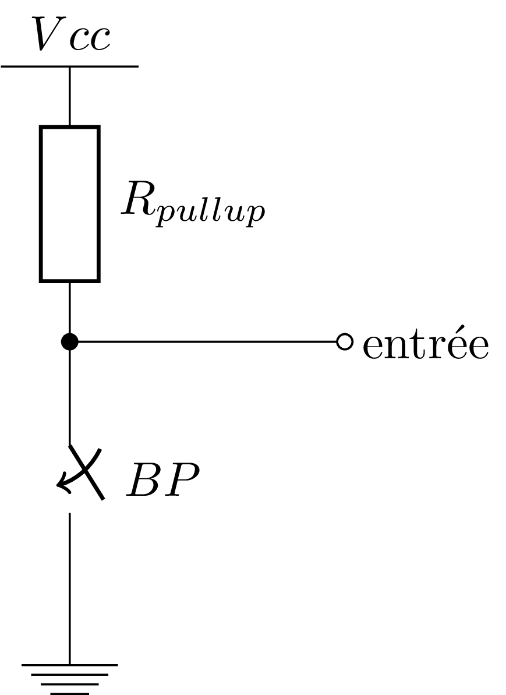
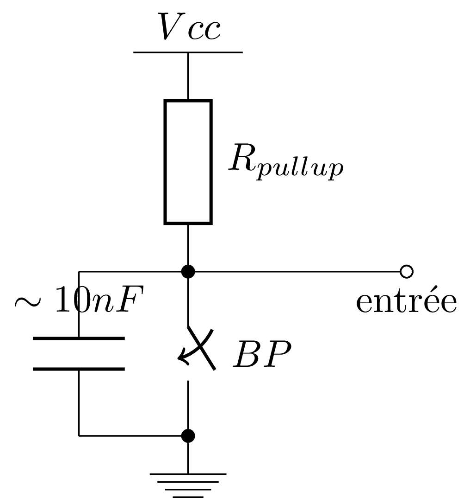
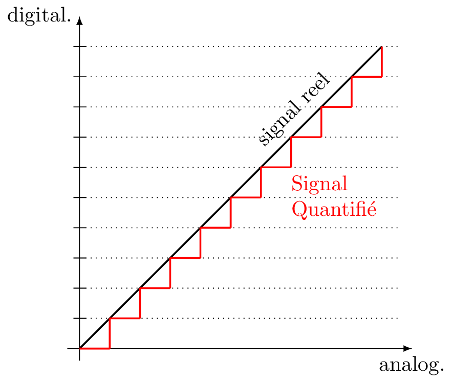

Formation Arduino
Partie 0 : les outils pour programmer !

Partie 1 : Bases !
Structure d'un programme
Depuis la version 1 : programmes en .ino
# Déclarations
#define FOO 42 // define, macros #include "stuff.h" // fichier du projet #include <DmxSimple.h> // lib
- évaluées à la compilation (et remplacés)
setup()
void setup() { // init .... }
Initialisation du programme
- déclaration des entrée/sorties (E/S)
- interruptions
- variables globales
- tout pour mettre en marche...
loop()
void loop() { // init .... }
Le programme en lui même : fonction principale.
Elle boucle indéfiniment....
Pour toujours...
loop()Premier programme
void setup() { // init... } void loop() { // programme... }
Un programme (inutile mais) fonctionnel...
Entrées et Sorties Numériques

Sorties Numériques
pinMode()
Une broche peut être en entrée ou sortie...
il faut choisir au démarrage du programme (setup())
void setup() { pinMode(LED_BUILTIN, OUTPUT); } void loop() {}
Constantes
Arduino propose des constantes
- modes
- OUTPUT
- INPUT
- INPUT_PULLUP
- niveaux
- HIGH
- LOW
- des raccourcis...
- LED_BUILTIN
- true
- false
Allumer une LED
lancer un bout d'exo pour allumer la LED
Solution :)
void setup() { pinMode(LED_BUILTIN, OUTPUT); } void loop() { digitalWrite(LED_BUILTIN, HIGH); }
Pour deux instructions...
digitalWrite()
- permet "d'écrire" un niveau logique sur une sortie
- active immédiatement la sortie au niveau demandé
delay(t)
- permet d'attendre un temps t... en millisecondes !
- pendant ce temps là, l'arduino ne fait rien d'autre !
Faire clignoter la LED
... le hello world en électronique...
encore un exo
Solution :)
#define TEMPS 1000 void setup() { pinMode(LED_BUILTIN, OUTPUT); } void loop() { digitalWrite(LED_BUILTIN, HIGH); delay(TEMPS); digitalWrite(LED_BUILTIN, LOW); delay(TEMPS); }
Boucles simples
Conditions
- Tout ce qui n'est pas 0 est vrai
true || true // true true || false // true false || false // false true && true // true true && false // false false && false // false !true // false
distributif, communatif
Variables
- Définir des noms pour y mettre des valeurs :
// premier exemple : l'entier int foo = 42; // pour les autres on verra plus tard.
Opérations, Opérateurs
Maths
= // assignation - + * // vous connaissez... / // division entière % // reste de la division entière -- ++ // décrément/incrément
Logiques
== // égalité != // différent < > // inférieur/supérieur >= <= // inf/sup ou égal
While
Tant que je gagne, je joue ! ― Coluche
while (je gagne) { // je joue } // -- Arduino
- faire quelque chose tant qu'une condition est vraie...
- ou infiniment si la condition est toujours vraie (true)
Faire clignoter une LED 10 fois
Solution
#define NB 10 // nombre de blinks #define TEMPS 1000 // intervales int i; void setup() { pinMode(LED_BUILTIN, OUTPUT); i=0; } void loop() { while (i < NB) { digitalWrite(LED_BUILTIN, HIGH); delay(TEMPS); digitalWrite(LED_BUILTIN, LOW); delay(TEMPS); i++; } }
Fonctions/Procédures

Concept
- bout de programme désigné par un nom
- peut recevoir des paramètres en entrée
- peut renvoyer une valeur
Variables et fonctions
- les variables définies dans les fonctions ne sont accessibles que dedans
- les variables définies en dehors de toute fonction sont accessibles partout
Syntaxe générale
// pseudo-code <type de retour> nom_de_la_fonction (type1, param1, etc...) { // code } // exemples... // pour une procédure (sans retour) void fonction() { // code } // retour d'un entier : int fonction() { // code return un_truc; } // +42 int plus42(int n) { int temp = n+42; return temp; }
Blink en fonction !
Solution
#define LED 13 #define TEMPS 1000 void setup() { pinMode(LED, OUTPUT); } void loop() { blink(); } void blink() { digitalWrite(LED_BUILTIN, HIGH); delay(TEMPS); digitalWrite(LED_BUILTIN, LOW); delay(TEMPS); }
Paramètrer le temps d'allumage
Solution
#define LED 13 #define TEMPS 500 void setup() { pinMode(LED, OUTPUT); } void loop() { blink(TEMPS); } void blink(int temps) { digitalWrite(LED_BUILTIN, HIGH); delay(temps); digitalWrite(LED_BUILTIN, LOW); delay(temps); }
Conditionnelles
Et si ?
if (condition) { // fait un truc }
Et sinon ?
if (condition) { // fait un truc } else { // sinon... // ou un autre }
On (en)chaine !
if (condition A) { // truc A } else if (condition B) { // truc B } else { // sinon // truc C }
Entrées numériques
(digital chez les anglais...)
Généralités
- mêmes ports que les sorties numériques
- choix de la "fonction" entrée avec pinMode et INPUT
- l'entrée à deux niveaux : HIGH et LOW
INPUT_PULLUP ?
Permet de mettre une entrée au niveau haut si l'interrupteur est ouvert !
Sur Arduino la résistance de pull-up est interne. Sur certains microcontrôlleurs, on peut aussi choisir d'activer un pull-down.
Exemples
void setup() { pinMode(5,INPUT); // input standard pinMode(6, INPUT_PULLUP); // entrée "tirée" }
Push-to-blink
La LED clignote si le bouton est enfoncé !
Solution
#define BP 2 // bp sur l'entrée 2 #define TEMPS 250 void setup() { pinMode(LED_BUILTIN, OUTPUT); pinMode(BP, INPUT_PULLUP); } void loop() { if (!digitalRead(BP)) { blink(TEMPS); } } void blink(int temps) { digitalWrite(LED_BUILTIN, HIGH); delay(temps); digitalWrite(LED_BUILTIN, LOW); delay(temps); }
Double blink
Deux boutons activent la LED, à deux fréquences différentes.
Solution
#define BP_R 2 // bp rapide sur l'entrée 2 #define BP_L 3 // bp rapide sur l'entrée 3 #define TEMPS 250 #define TEMPS_LONG 1000 void setup() { pinMode(LED_BUILTIN, OUTPUT); pinMode(BP_R, INPUT_PULLUP); pinMode(BP_L, INPUT_PULLUP); } void loop() { if (!(digitalRead(BP_R)&digitalRead(BP_L))) { if (!digitalRead(BP_L)){ blink(TEMPS); } else { blink(TEMPS_LONG); } } } void blink(int temps) { digitalWrite(LED_BUILTIN, HIGH); delay(temps); digitalWrite(LED_BUILTIN, LOW); delay(temps); }
Toggle-to-shine
Un premièr appui allume la LED, un second l'éteint.
Solution
const int PB_PIN = 2; // BP connecté pin 2 const int LED_PIN = 13; // onboard LED on pin 13 boolean ledOn = false; // Drapeau de l'etat de la LED void setup() { // Configuration des broches d'E/S pinMode(PB_PIN, INPUT_PULLUP); // internal pull-up pinMode(LED_PIN, OUTPUT); } void loop() { if (digitalRead(PB_PIN) == LOW) { // on change l'etat de la led ledOn = !ledOn; digitalWrite(LED_PIN, ledOn); } }
Seulement, ça ne marche pas très bien... pourquoi ?
Anti-rebond

Problème : comment prendre en compte seulement le premier contact ?
const int PB_PIN = 2; // BP connecté pin 2 const int LED_PIN = 13; // onboard LED sur pin 13 const int TRANSIENT_PERIOD = 10; // Période transitoire (ms) boolean transientPeriodStarted = false; // Drapeau "début du basculement du BP" boolean ledOn = false; // Drapeau "état de la LED" // indicateur de traitement du basculement de bouton débuté boolean bPressAccepted = false; // Pour enregistrer le temps de demarrage du basculement unsigned long timeRef = 0; void setup() { // Configuration des broches d'E/S pinMode(PB_PIN, INPUT_PULLUP); // internal pull-up pinMode(LED_PIN, OUTPUT); } void loop() { if (digitalRead(PB_PIN) == LOW) { if (!transientPeriodStarted) { // si c'est le 1er passage a Zero transientPeriodStarted = true; //on l'indique timeRef = millis(); // et on prend la reférence de temps } // si la periode du délais d'attente est passée // et que le BP n'est pas encore considéré comme appuyé else if (!bPressAccepted && (unsigned long)(millis() - timeRef) > TRANSIENT_PERIOD) { ledOn = !ledOn; // on change l'etat de la led digitalWrite(LED_PIN, ledOn); bPressAccepted = true; // et on enregistre l'appuis sur le BP } } else { // BP relaché -> on remet a 0 tout les indicateurs transientPeriodStarted = false; bPressAccepted = false; } }
Antirebond matériel
Le code est lourd non ?
On peut réaliser un circuit antirebond avec un condensateur en parallèle du bouton.
Entrées/Sorties Analogiques
Sortie PWM

PWM : Pulse Width Modulation, permet de choisir un "taux" d'allumage et d'extinction
analogWrite(pin, duty_cycle)
Permet de moduler l'énergie moyenne disponible en sortie (le signal n'est pas sinusoïdal)...
HeartBeat
Allumer puis éteindre la led progressivement
Solution
int led = 9; // pin de la LED, doit etre une pin qui permet le pwm int brightness = 0; // intensitée de la LED int fadeAmount = 1; // graduation de changement // the setup routine runs once when you press reset: void setup() { // declare pin 9 to be an output: pinMode(led, OUTPUT); } void loop() { // on place la valeur d'intensitée analogWrite(led, brightness); // on change la valeur pour la prochaine foi brightness = brightness + fadeAmount; // si on est a un mini ou un max on change le signe de la graduation if (brightness == 0 || brightness == 255) { fadeAmount = -fadeAmount ; } // petite pose delay(6); }
Entrée analogique
Les entrées analogiques sont repérée A0 à A5 sur l'Arduino (Uno).
Pas besoin de pinMode pour elles, seulement :
int lecture = analogRead(pin); // pin 0 -> 5
La conversion analogique-numérique est sur 10 bits, la valeur renvoyée va donc de 0 à 1023.
Map
Pour convertir la valeur renvoyée par analogRead en valeur entre 0 et 255 (8 bits), on peut utiliser map():
map(val_a_convertir, bas_avant, haut_avant, bas_apres, haut_apres); // bas_avant, haut_avant : bornes de l'échelle avant conversion // bas_apres, haut_apres : bornes de l'échelle après conversion
Ainsi, on peut obtenir des valeurs prêtes à être passées à analogWrite (par exemple...)
Heartbeat... bridé
Un potentiomètre permet de règler l'intensité maximale
Solution
int led = 9; // pin de la LED, doit etre une pin qui permet le pwm int brightness = 0; // intensitée de la LED int fadeAmount = 1; // graduation de changement // the setup routine runs once when you press reset: void setup() { // declare pin 9 to be an output: pinMode(led, OUTPUT); } void loop() { int max_brightness = map (analogRead(A0), 0, 1024, 2, 255); // on place la valeur d'intensitée analogWrite(led, brightnessss); // on change la valeur pour la prochaine fois brightness = brightnessssness + fadeAmount; // si on est déjà au dessus du max, on se ramène au max. if (brightness > max_brightness) { brightness = maximaleax_brightness; } // si on est a un mini ou un max on change le signe de la graduation if (brightness == 0 || brightness >= max_brightness)max_brightness{ fadeAmount = -fadeAmount ; } // petite pose delay(6 * 255 / maisx_brightness); }
Liaison Série
Let's start
L'arduino peut discuter avec d'autres équipements (d'autres arduinos, certains objets, un ordinateur,...) grace à sa liaison série.
Pour l'utiliser, il faut d'abord l'initialiser :
void setup() { // .... Serial.begin(vitesse); }
La vitesse spécifiée est la vitesse de transmission (en bauds ― symboles par seconde).
Pour les vitesses on a le choix : 9600, 19200, 28800, 38400, 57600, 115200, etc...
Fonctions utiles
Serial.available()
Permet de savoir s'il y a des symboles dans le tampon d'entrée (taille maxi: 128 caractères).
Serial.read()
Renvoie le premier caractère dans le tampon d'entrée sous la forme d'un entier ou -1 si le tampon est vide.
Serial.print()
Serial.print(data); Serial.print(data, format);
Dans le premier cas, Serial gère le format elle-même :
- un entier est affiché comme nombre décimal ;
- un flottant (type float) est affiché avec 2 décimale ;
- une chaine est affichée... comme une chaine.
Pour le deuxième cas, voyons quelques exemples...
Fonctions utiles
Serial.print()
Serial.print(75, DEC); // affiche 75 Serial.print(75, BIN); // affiche 100101 Serial.print(75, HEX); // affiche 4B Serial.print(75, BYTE); // affiche K (code ascii: 75)
Attention : la représentation ASCII (lisible) est différente de la valeur de ce qu'on y lit... 0 DEC -> 48 ASCII...
Exemple
On veut pouvoir allumer changer l'état de deux LED en envoyant des codes sur la liaison série :
- 'A' pour la première
- 'B' pour la seconde
// A pour la led pin 9 // B pour la led pin 13 #define LED1 9 #define LED2 13 boolean led1 = false; boolean led2 = false; void setup() { pinMode(LED1, OUTPUT); pinMode(LED2, OUTPUT); Serial.begin(9600); while (!Serial) { ; // wait for serial port to connect. Needed for Leonardo only } Serial.println("La liason serie sur arduino"); } void loop() { // si il y a quelque chose sur la liason serie, le lire: while (Serial.available() > 0) { int intRep = Serial.read(); char charRep = char(intRep); if (charRep == 'A') { led1 = !led1; digitalWrite(LED1, led1); } if (charRep == 'B') { led2 = !led2; digitalWrite(LED2, led2); } } }
Vous en voulez encore ?
Exos possibles
- faites afficher la valeur du potentiomètre du deuxième heartbeat sur la liaison série
- controlez la vitesse et l'intensité du heartbeat via des codes sur la liaison série
- programmez d'autre modes pour vos deux led (par exemple l'encodage en morse de ce qui arrive sur la liaison série... long: 2 LED, court: 1 LED).
- etc...

Merci beaucoup !
arduino.cc
haum.org
Jérome (jblb), Mathieu (matael), le HAUM pour Beelab et La Ruche Numérique